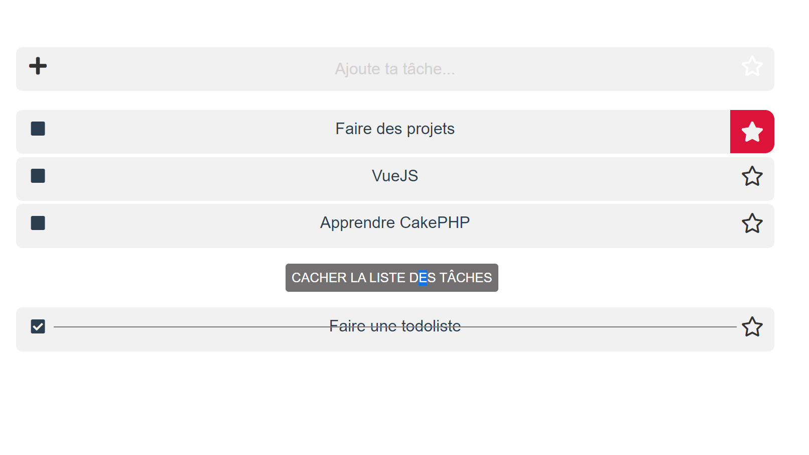

Depuis maintenant plus d'un an, je travaille le PHP procédural.
Actuellement en option développement, j'approfondis mes bases et augmente mes compétences avec la création d'un framework PHP en Programmation orienté objet avec une base de données MYSQL (PHPMYADMIN).
Front End Html, Css,JS
Mon apprentissage s'est poursuivi par le langage de balisage HTML.
J'applique le style de ma page via CSS, le préprocesseur SASS et Bootstrap. Je rends mes sites dynamiques avec Javascript. Je me forme en ce moment au framework VueJS en plus des cours dispensés par mon école.
Worpress
Je maitrise ce CMS et j'ai créé un site pour un webmaster.Je connais les outils tels que
Yoast, Google search console, et google Analytics.
Graphisme
Passionné par l'art et le dessin, je maîtrise les outils Photoshop, Illustrator, et Adobe XD. Je suis force de propositions pour des logos ou des wireframes.
Mes Projets
Todos liste en VueJS
Le 4 MARS 2021

Afin de travailler les directives,les boucles, les principes de bases de Vue JS, je suis entrainé à réaliser cette "todos liste".
Lors de notre partiel de 2ème année, j'ai eu la chance de développer complètement et de façon autonome ce site d'un salon de barbers. Dans ce projet, j'ai crée le concept, réalisé les recherches, le logo, le wireframe et la mise en place complète de tout le site avec le système de panier.
Pendant une semaine lors de la créative Week, nous étions en charge de la refonte du site de l'ICR. Selon le cahier des charges de cette école, nous avons fait une proposition. Nous étions 4 lors de ce challenge pour répondre aux attentes de notre client. Seul développeur du groupe, j'ai constitué cette maquette en HTML, sass, js. Je continue de travailler sur le développement de ce site. Par la suite, des pages et de nouvelles fonctionnalités seront mises en place.
Afin de travailler ma logique et le language Javascript, J'ai entrepris de créer le jeu du morpion.Sa version 1 reste une alternance entre deux joueurs.La projection de la version sera un niveau contre la machine avec encore plus de logique.
Lors de notre deuxième année de Bachelor, nous devions concevoir un site de A à Z sur une création de Food Truck (desktop seulement). Ce travail de groupe a été riche en expérience tant au niveau marketing, qu'au niveau design ainsi que développement. Je suis à l'origine de la création complète du site avec la contrainte de répondre au concept des designers.
Afin de gérer les API via Javascript, j'ai entrepris d'apprendre à créer une application méteo via une API gratuite.Munie d'images SVG, cette application fait partie des créations pour ma progression dans le code et de mes investissements personnels.
Ce projet est un hommage personnel à un de mes artistes préférés depuis ma plus tendre enfant. Acteur, réalisateur, dessinateur de talent, il incarne pour moi le dessinateur à l'univers original et intrigant.Plus qu'une muse, ce surdoué est un visionnaire tant par sa personnalité que par sa qualité d'illustrations.
Afin de travailler les bases de données et les compétences en PHP, j'ai créé une application todo liste.Mon but était d'intégrer le CRUD dans un exercice simple.